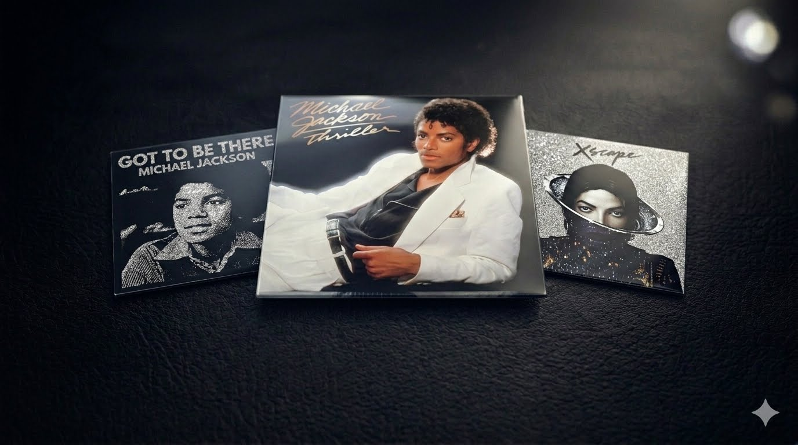

Um legado eterno de música, dança e arte que transcendeu gerações e redefiniu a cultura pop mundial para sempre.
Descubra sobre a hitoria do MICHAEL JACKSON observando o site e realize o quiz para descobrir o seu conhecimento sobre o rei do POP
Faça o quiz

Michael Jackson foi um dos artistas mais influentes da história da música, conhecido como o “Rei do Pop”. Marcou gerações com seu talento, coreografias icônicas e sucessos como Billie Jean, Thriller e Beat It, deixando um legado que impacta a cultura pop até hoje.
Desde a infância até se tornar um ícone global, ele revolucionou a música pop com performances inesquecíveis, videoclipes históricos e álbuns que atravessaram gerações. Seu impacto artístico continua vivo até hoje.

Os álbuns de Michael Jackson marcaram a história da música mundial. Obras como Thriller, Bad e Dangerous trouxeram sucessos inesquecíveis, misturando pop, rock, soul e dança.
As coreografias de Michael Jackson se tornaram símbolos da cultura pop. Movimentos como o famoso moonwalk impressionaram o mundo e influenciaram gerações de artistas e dançarinos.